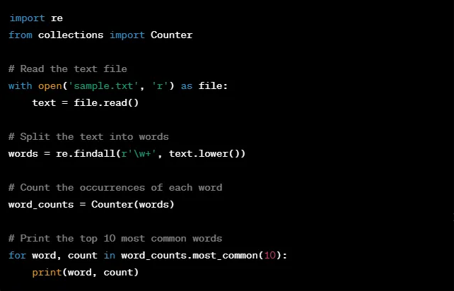

The operational procedures themselves (tickets, change management, backups, safety, professionalism) are on the next page, Lesson 13. Finishing this course gets you ready for the Core 2 practice exam.
A script is a text file of commands that a program called an interpreter runs one after another. Technicians write scripts so a repeated job is done the same way every time, faster and with fewer mistakes. You don't need to be a programmer for Core 2, but you must recognize each script type and know what scripts are used for.
| File extension | Language | Runs on |
|---|---|---|
.bat | Windows batch file (the old Command Prompt language) | Windows |
.ps1 | PowerShell, Microsoft's modern scripting language | Windows (PowerShell 7 also runs on macOS and Linux) |
.vbs | VBScript, an older Windows scripting language that Microsoft is retiring | Windows |
.sh | Shell script (Bash and similar shells) | Linux and macOS |
.js | JavaScript | Web browsers, or Node.js on any system |
.py | Python | Any system with Python installed |
%USERPROFILE% in Windows, $HOME in Linux).# in PowerShell, Bash and Python; REM or :: in batch files).Example (Python): this script reads a text file, splits it into words and prints the ten most common ones. You don't need to write code like this for the exam, only recognize that a .py file is Python.

| Tool | Use it to |
|---|---|
| Remote Desktop Protocol (RDP), port 3389 | Control a Windows computer's desktop over the network |
| Virtual Network Computing (VNC) | Share and control a desktop on any operating system |
| Secure Shell (SSH), port 22 | Get an encrypted command line on a Linux computer or network device |
| Virtual private network (VPN) | Join the office network securely from home |
| Remote monitoring and management (RMM) | Let an IT team or managed service provider watch, patch and fix many computers from one console |
| Screen-sharing, video-conferencing and file transfer tools | Help a user while they watch; send files to a remote computer |
Security: never expose RDP directly to the internet; put it behind a VPN. Use multifactor authentication and strong passwords, keep remote tools updated, and remove tools you no longer use. Scammers who call pretending to be "tech support" ask victims to install a remote access tool, so a legitimate technician always confirms who they are and asks permission before connecting.
Video: Professor Messer, "Scripting Languages – CompTIA A+ 220-1202 – 4.8" (free A+ course).
A technician finds a file called map-drives.ps1 on a Windows server. What kind of script is it?
.ps1 is PowerShell. Batch files are .bat, Python is .py, and Linux shell scripts are .sh.
You need an encrypted command line on a Linux web server in another city. Which tool do you use?
SSH gives an encrypted command-line session, which is how Linux servers are usually managed. RDP and VNC share a graphical desktop.
A colleague found a script online that "cleans up" Windows and wants to run it on all 200 office computers tonight. What should happen first?
Scripts from unknown sources can contain malware or change settings by mistake. Read it, test it on one machine, and follow change management before running it everywhere.
Write-Output "Computer: $env:COMPUTERNAME" Write-Output "User: $env:USERNAME"
info.ps1 in your Documents folder.cd ~\Documents and powershell -ExecutionPolicy Bypass -File .\info.ps1. You'll see your computer and user name, read from environment variables.Cybersecurity Curriculum | CompTIA A+ Core 2